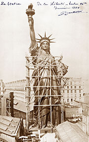
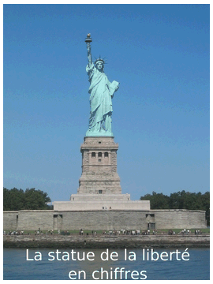
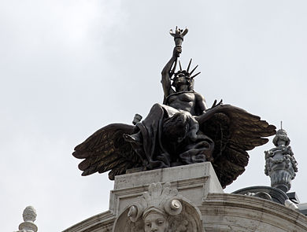

La Liberté éclairant le monde (en anglais : Liberty Enlightening the World), ou simplement Liberté, plus connue sous le nom de statue de la Liberté (Statue of Liberty), est l'un des monuments les plus célèbres des États-Unis. Cette statue monumentale est située à New York, sur la Liberty Island, au sud de Manhattan, à l'embouchure de l'Hudson et à proximité d'Ellis Island.
Pesant 225 tonnes et mesurant 92,9 mètres, elle est construite en France et offerte par le peuple français, en signe d'amitié entre les deux nations, pour célébrer le centenaire de la Déclaration d'indépendance américaine. La statue fut dévoilée au grand jour le 28 octobre 1886 en présence du président des États-Unis, Grover Cleveland. L'idée venait du juriste et professeur au Collège de France Édouard de Laboulaye, en 1865. Le projet fut confié, en 1871, au sculpteur français Auguste Bartholdi. Pour le choix du cuivre devant être employé à la construction, l'architecte Eugène Viollet-le-Duc eut l'idée de la technique du repoussé. En 1879, à la mort de Viollet-le-Duc, Bartholdi fit appel à l'ingénieur Gustave Eiffel pour décider de la structure interne de la statue.
Ce dernier imagina un pylône métallique supportant les plaques de cuivre martelées et fixées.
La statue fait partie des National Historic Landmarks depuis le 15 octobre 1924 et de la liste du patrimoine mondial de l'UNESCO depuis 19844. La statue de la Liberté, en plus d'être un monument très important de la ville de New York, est devenue l'un des symboles des États-Unis et représente de manière plus générale la liberté et l'émancipation vis-à-vis de l'oppression. De son inauguration en 1886 jusqu'au Jet Age5, la statue est ainsi la première vision des États-Unis pour des millions d'immigrants, après une longue traversée de l'océan Atlantique. Elle constitue l'élément principal du Statue of Liberty National Monument qui est géré par le National Park Service. La création de la statue de la Liberté se place dans la tradition du colosse de Rhodes, dont certaines représentations ont sans doute été une inspiration pour Bartholdi.

Histoire
L'idée d'un présent, en gage de l'amitié franco-américaine et pour célébrer le centenaire de la déclaration d'indépendance des États-Unis, est traditionnellement donnée comme ayant pour origine un dîner organisé au début de l'été 1865 à Glatigny chez le juriste français Édouard de Laboulaye qui avait réunit un groupe d'amis libéraux comme lui (Oscar du Motier de La Fayette, Charles de Rémusat, Hippolyte Clérel de Tocqueville et le sculpteur alsacien Auguste Bartholdi qui venait de sculpter le buste de Laboulaye) pour célébrer la victoire de l'Union dans la guerre de Sécession et se désoler de la mort d'Abraham Lincoln, mais en réalité aucun projet de cadeau n’était sorti du dîner10.
L'idée d'une statue en relation avec Lincoln et les États-Unis ne naît pas de ce dîner mais d'une collecte de fonds organisée en 1865 par le quotidien Le Phare de la Loire pour une médaille en or dédiée à Mary Todd Lincoln, la veuve du président américain et qui portait l’inscription « Dédiée par la Démocratie française à Lincoln, honnête homme qui abolit l’esclavage, rétablit l’Union, sauva la République, sans voiler la statue de la Liberté »10. Bartholdi a certainement mélangé la campagne pour la médaille et le dîner d'américanophiles pour inventer dans son journal, 20 ans après les faits, un pamphlet donné lors de ce dîner pour lever des fonds11.
Ce projet né à la fin des années 1860, en pleine vague de statuomanie, vacille en raison de la situation politique instable de la fin du Second Empire. Bartholdi, impressionné par les colosses de Memnon qu'il a découverts lors de son voyage en Égypte en 1855, se consacre alors à d'autres sculptures colossales, comme celle d'un grand phare (sous la forme d'une fellahine de 19 m de hauteur tenant une torche en l'air) à l'entrée du canal de Suez qu'il propose en 1867 à Ismaïl Pacha, khédive d'Égypte et qui s’appellerait La Liberté éclairant l'Orient. Ce projet est abandonné, faute de financement (une statue plus modeste de Ferdinand de Lesseps, sculptée par Emmanuel Frémiet, est inaugurée le 17 novembre 1899 à Port-Saïd), mais Bartholdi garde le souvenir de cette statuaire colossale égyptienne12.
En 1870, Bartholdi sculpte une première ébauche en terre cuite et en modèle réduit13 aujourd'hui exposée au musée Bartholdi à Colmar. La même année, la France entre en guerre contre la Prusse et doit capituler. Le 10 mai 1871, elle cède l'Alsace-Lorraine à l'Empire allemand. L'opinion publique et le gouvernement français sont déçus de la sympathie des États-Unis pour les Allemands, dont le nombre était important sur le sol américain. Le projet commémoratif est temporairement écarté en raison des troubles politiques que connaît le début de la Troisième République. En effet, la plupart des Français pensent alors que cette république n'est qu'une solution temporaire qui laisserait place à la monarchie, ou à un régime semblable à celui de Napoléon Ier.

Symbolique
La statue représente une femme en station verticale, les épaules tournées de trois quarts et le pied gauche en avant, le talon arrière droit soulevé129. Portant des sandales, elle est vêtue d'une robe drapée recouverte d'une stola à la romaine, et coiffée d'une couronne comportant sept pointes, symbolisant les « Sept Continents » (Amérique du Nord, Amérique du Sud, Europe, Asie, Afrique, Océanie et Antarctique)130. Cependant, les sept pointes pourraient également évoquer les sept océans (Arctique, Antarctique, Atlantique nord et sud, Pacifique nord et sud et Indien)131.
Le diadème fait aussi penser à celui que portait le dieu du soleil Hélios. En tout cas, Bartholdi n'a pas retenu l'idée du bonnet phrygien, symbole de liberté depuis l'Antiquité. La statue tient dans sa main gauche une tablette, qu'elle garde près de son corps, alors que sa main droite brandit une torche enflammée, maintenue en hauteur. La tablette évoque la loi ou le droit, alors que la torche renvoie aux Lumières. Certains y ont vu un symbole maçonnique132. La structure est recouverte d'une fine couche de cuivre, qui repose sur une énorme structure en acier (à l'origine en fer puddlé), à l'exception de la flamme qui est recouverte de feuillets d'or. La structure repose sur un premier socle de forme carrée, lui-même posé sur un autre socle en forme d'étoile irrégulière à onze pointes. La hauteur de la statue de la Liberté est de 46,05 mètres, hauteur qui est portée à 92,9 mètres entre la base du piédestal et la torche133. Le piédestal fait 27,2 m de hauteur, la torche 6,4 m, le bras droit tenant la torche 14 m, la tête (du menton au sommet) 5,26 m134.
La tablette de 7,18 m de hauteur, tenue dans la main gauche, est gravée de la date d'indépendance des États-Unis, écrite en chiffres romains : JULY IV MDCCLXXVI. Les vingt-cinq fenêtres symbolisent quant à elles vingt-cinq pierres gemmes trouvées sur la terre et les rayons du ciel qui brillent sur le monde135. Au pied de la structure se trouvent des chaînes brisées qui symbolisent l'affranchissement du joug de l'oppression, i. e. la liberté. La statue est tournée vers l'est, c'est-à-dire vers l'Europe, avec laquelle les États-Unis partagent un passé et des valeurs.

Culture populaire
La statue est très rapidement devenue une icône populaire, figurant sur de nombreuses affiches et images, dans divers films et livres. « Icône vide » donnant une image neutre et impersonnelle de la Liberté, elle peut représenter de nombreux symboles153. En 1911, l'écrivain américain O. Henry faisait dialoguer Miss Liberty avec une autre statue. En 1918, le monument figurait sur l'affiche du Victory Loan (prêt de la victoire) accordé par les États-Unis à l'Europe. Les représentations de la statue de la Liberté endommagée ou détruite constituent un thème iconographique récurrent dès la fin du xixe siècle, que ce soit sur les affiches, les illustrations, les comics ou au cinéma, avec un gain net de popularité à partir du début du xxe siècle154. Dans les années 1940 et 1950, de nombreux magazines à sensation dépeignaient la statue entourée de ruines et de sédiments. Pendant la Guerre froide, la statue était figurée sur les affiches de propagande comme symbole de la liberté ou des États-Unis. Les dessinateurs américains en ont fait l'incarnation de New York au moment des attentats du 11 septembre 2001. La publicité l'a aussi utilisée pour mettre en valeur des produits tels que le Coca-Cola ou le chewing-gum107. La statue a également inspiré des peintres du xxe siècle comme Andy Warhol107.
Dans le cinéma, la statue a fait de très nombreuses apparitions. La toute première remonte à 1917, dans le film de Charlie Chaplin L'Émigrant. En 1942, elle apparaît dans la scène finale du film Cinquième Colonne, d'Alfred Hitchcock107. À la fin de la première version de La planète des singes, elle se trouve en partie ensevelie sous le sable d'une plage. Dans Superman 4, elle est retirée de son socle par un ennemi de Superman, avant que celui-ci ne l'y redépose. Dans SOS Fantômes 2, Miss Liberty prend vie et s'anime pour vaincre les ennemis. Elle est également filmée dans d'autres blockbusters155 comme Le Cinquième Élément, Le Jour d'après, A.I. Intelligence artificielle, ainsi que dans des cut-scenes de séries télévisées comme Sex and the City ou Les Experts : Manhattan. Dans Cloverfield, film catastrophe réalisé par Matt Reeves, un monstre sème la destruction dans New York. On voit une scène où la tête de la statue de la Liberté s'écrase brutalement en pleine rue. Dans le film d'animation Ballerina (2016), la statue est encore en construction à Paris. Dans quelques jeux vidéo en ligne notamment dans League of Legends l'un des skins de Karthus, liche, est Statue Karthus, et dans MapleStory, la statue se trouve à NLC (New Leaf City). Dans Grand Theft Auto IV, la statue de la Liberté y est parodiée. Celle-ci tient un café au lieu d’une torche et le modèle ressemble grandement à Hilary Clinton qui, à l’époque du jeu (2008), était en campagne électorale pour l´investiture du parti démocrate contre son homologue, Barack Obama ; Liberty City, qui représente la ville de New York, parodie le fait que la ville y est très libérale et démocrate. La statue est aussi un élément du décor dans les jeux vidéos Deus Ex (2000), à moitié détruite, et Assassin's Creed Unity (2014), alors en construction à Paris.
En 1978, la statue est au cœur d'un canular imaginé à l'université du Wisconsin-Madison. Plusieurs étudiants reproduisent les parties hautes de la statue pour les placer dans un lac gelé de la région, ce qui donne l'impression qu'elle en émerge. Le monument figure en outre sur les plaques d'immatriculation de l'État de New York ainsi que sur celles du New Jersey. Dans le milieu du sport, Lady Liberty sert de logo à l'équipe de la NHL des Rangers de New York, et à l'équipe de basket-ball des Liberty de New York, qui évolue en WNBA. Pour célébrer le centenaire du monument, la Poste française crée en 1986 un timbre représentant le visage de la statue et intitulé « Liberté ». En 2000, le monument fait partie des propositions pour désigner les « sept nouvelles merveilles du monde » (New7Wonders), projet lancé par le réalisateur suisse Bernard Weber. Le logo de l'Université de New York reprend la torche de la statue de la Liberté pour montrer qu'elle est au service de la ville de New York. La torche apparaît à la fois sur le sceau et sur le logo de l'université, dessiné par Ivan Chermayeff en 1965. Il existe également une torche en argent réalisée par Tiffany & Co (un don d'Helen Miller Gould en 1911).
Dans le roman postcolonial États-Unis de Banana de Giannina Braschi, les personnages principaux Hamlet, Zarathustra et Giannina prennent le ferry à partir du Ground Zero pour libérer Segismundo de la Statue de la Liberté où son père, le roi des États-Unis de Banana, l'a séquestré il y a 100 ans.156,157. Dans le roman inachevé L'Amérique de Franz Kafka, Karl Rossmann débarque à New-York où s'élève la statue de la Liberté brandissant non pas une torche mais un glaive158.
La statue est très rapidement devenue une icône populaire, figurant sur de nombreuses affiches et images, dans divers films et livres. « Icône vide » donnant une image neutre et impersonnelle de la Liberté, elle peut représenter de nombreux symboles153. En 1911, l'écrivain américain O. Henry faisait dialoguer Miss Liberty avec une autre statue. En 1918, le monument figurait sur l'affiche du Victory Loan (prêt de la victoire) accordé par les États-Unis à l'Europe. Les représentations de la statue de la Liberté endommagée ou détruite constituent un thème iconographique récurrent dès la fin du xixe siècle, que ce soit sur les affiches, les illustrations, les comics ou au cinéma, avec un gain net de popularité à partir du début du xxe siècle154. Dans les années 1940 et 1950, de nombreux magazines à sensation dépeignaient la statue entourée de ruines et de sédiments. Pendant la Guerre froide, la statue était figurée sur les affiches de propagande comme symbole de la liberté ou des États-Unis. Les dessinateurs américains en ont fait l'incarnation de New York au moment des attentats du 11 septembre 2001. La publicité l'a aussi utilisée pour mettre en valeur des produits tels que le Coca-Cola ou le chewing-gum107. La statue a également inspiré des peintres du xxe siècle comme Andy Warhol.